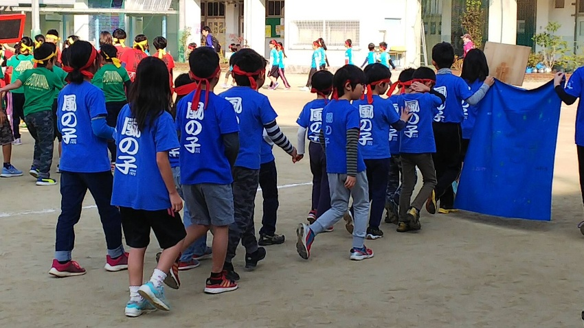

QUESTIONS & ANSWERS
よくある質問。
見学や入所の前に気になることをまとめました。回答は掲載元の要約、または「確認待ち」のご案内です。

既存サイト掲載写真BEFORE YOUR VISIT
気になることを、ひとつずつ。
Q.見学や体験入所はできますか？
移転先サイトには見学・体験入所を受け付ける案内があります。現在の受付状況、実施日、予約方法は施設に確認が必要です。デモフォームで予約はできません。
Q.何年生が対象ですか？ 対応する小学校は？
掲載情報では小学1〜6年生、苅田・長居・苅田北・苅田南の4小学校が紹介されています。現在の対象と受入枠は確認してください。
Q.学校が休みの日は何時から利用できますか？
既存サイトには学校休校日8:00〜19:15の記載があります。現在の開所日、土曜・長期休暇・祝日の扱いは施設への確認が必要です。
Q.利用料金を教えてください。
具体的な現行金額は確認できていません。旧サイトには学年別の料金設定、きょうだい・ひとり親家庭の割引の記載があります。詳しくは「入所案内・料金」の確認項目をご覧ください。
Q.学校へのお迎えはありますか？
旧サイトには苅田小以外の希望者を迎えに行く記載があります。現在の実施校・条件・担当者・移動方法は必ず施設に確認してください。
Q.おやつのアレルギー対応はありますか？
未確認です。対応の可否、持参のルール、緊急時対応について入所前に相談・確認してください。このデモでは対応可能と案内していません。
Q.警報や学級閉鎖のときは利用できますか？
旧サイトには対応する旨の記載がありますが、現在の感染症対応や気象警報時のルールは未確認です。当日の利用判断は必ず施設の正式な案内に従ってください。
Q.父母会の活動はありますか？
既存サイトには父母会と指導員の共同運営、定例会などの記載があります。現行の参加頻度や役割、費用は確認が必要です。
Q.このホームページから問い合わせできますか？
このサイトは営業提案用の非公式デモです。フォームは入力・確認の操作体験のみで、送信・予約・個人情報の保存は行いません。実際の連絡は掲載元で最新の連絡方法をご確認ください。
掲載根拠：既存サイト「学童紹介」（外部サイト）↗ ／ 2026年10月21日確認。現行の運用は施設確認待ち。
掲載根拠：移転先サイト・トップ（外部サイト）↗ ／ 2026年10月21日確認。現行の運用は施設確認待ち。
LET’S TALK
はじめの一歩は、
風の子を知ることから。
見学で確かめたいこと、気になることを整理してみませんか。